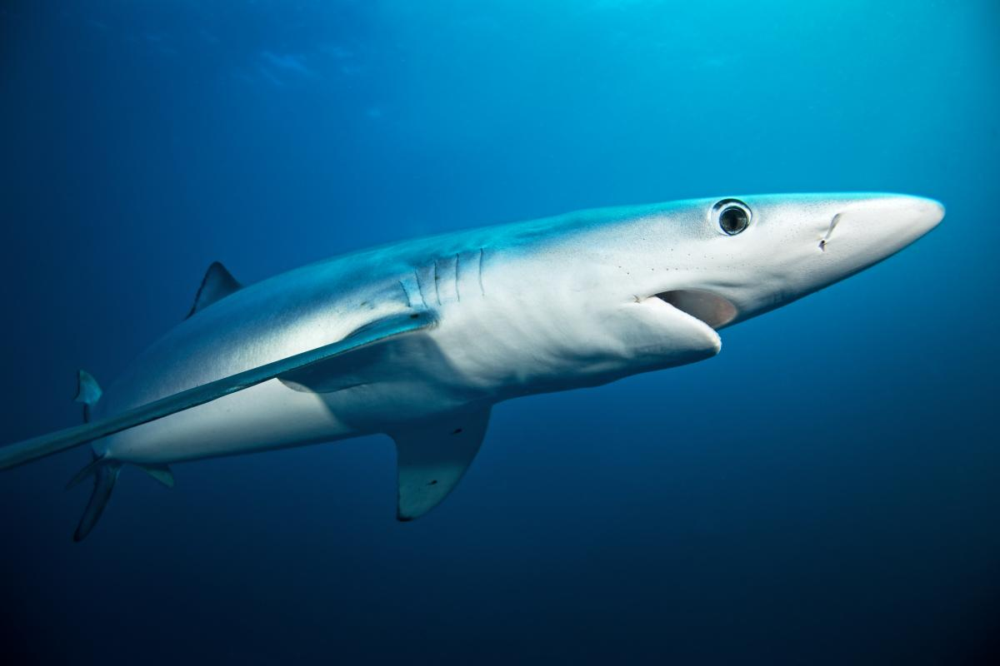

Great White Shark
(Carcharadon carcharias)
The great white shark (Carcharodon carcharias), also known as the
white shark, white pointer, or simply "great white", is a species of
large mackerel shark which can be found in the coastal surface waters
of all the major oceans. It is notable for its size, with larger
female individuals growing to 6.1 m (20 ft) in length and 1,905–2,268
kg (4,200–5,000 lb) in weight at maturity. However, most are smaller;
males measure 3.4 to 4.0 m (11 to 13 ft), and females measure 4.6 to
4.9 m (15 to 16 ft) on average. According to a 2014 study, the
lifespan of great white sharks is estimated to be as long as 70 years
or more, well above previous estimates, making it one of the longest
lived cartilaginous fishes currently known. According to the same
study, male great white sharks take 26 years to reach sexual maturity,
while the females take 33 years to be ready to produce offspring.
Great white sharks can swim at speeds of 25 km/hr (16 mph) for short
bursts and to depths of 1,200 m (3,900 ft).
The great white shark has no known natural predators other than, on
very rare occasions, the killer whale. It is arguably the world's
largest-known extant macropredatory fish, and is one of the primary
predators of marine mammals, up to the size of large baleen whales.
This shark is also known to prey upon a variety of other marine
animals, including fish, and seabirds. It is the only known surviving
species of its genus Carcharodon, and is responsible for more recorded
human bite incidents than any other shark.
Source ↗
Megalodon
(Otodus megalodon)
Megalodon (Otodus megalodon), meaning "big tooth", is an extinct species of mackerel
shark that lived approximately 23 to 3.6 million years (mya), during the Early Miocene to the Pliocene.
It was formerly thought to be a member of the family Lamnidae and a close relative of the
the great white shark (Carcharodon carcharias). However it is now classified into the extinct family Otodontidae,
which diverged from from the great white shark during the Eaely Cretaceous. Its genus placement is still debated,
authors placing it in either Carcharocles, Megaselachus, Otodus, or Procarcharodon.
This is because transitional fossils have been found showing that megalodon is the final chronospecies
of a lineage of giant sharks orignally of the genus Otodus which evolved during the Paleocene.
While regarded as one of the largest and most powerful predators to have ever lived,
megalodon is only known from fragmentary remains, and its appearance and maximum size are uncertain.
Scientists differ on whether it would have more closely resembled a stockier version of
the great white shark, the whale shark (Rhincodon typus), the basking shark (Cetorhinus maximus)
or the sand tiger shark (Carcharias taurus). Most estimates of megalodon's size extrapolate from teeth,
with maximum length estimates up to 10–20.3 meters (33–67 ft) and average
length estimates of 10.5 meters (34 ft). Estimates suggest their large jaws could exert
a bite force of up to 108,500 to 182,200 newtons (24,400 to 41,000 lbf). Their teeth were thick,
and robust, built for grabbing prey and breaking bone.
Source ↗
Tiger Shark
(Galeocerdo cuvier)
The tiger shark (Galeocerdo cuvier) is a species of requiem shark
and the only extant member of the genus Galeocerdo. It is a large macropredator,
capable of attaining a length over 5 m (16 ft 5 in). Populations are found
in many tropical and temperate waters, especially around central Pacific islands.
Its name derives from the dark stripes down its body, which resemble a tiger's pattern,
but fade as the shark matures.
The tiger shark is a solitary, mostly nocturnal hunter. It is notable for having
the widest food spectrum of all sharks, with a range of prey that includes crustaceans,
fish, seals, birds, squid, turtles, sea snakes, dolphins, and even other smaller sharks.
It also has a reputation as a "garbage eater",consuming a variety of inedible,
man-made objects that linger in its stomach. Though apex predators, tiger sharks are
sometimes taken as prey by groups of killer whales. It is considered a near
threatened species due to finning and fishing by humans. The tiger shark is second
only to the great white in recorded fatal attacks on humans, but these events are
still exceedingly rare.
The shark was first described by Peron and Lesueur in 1822, and was given the
name Squalus cuvier. Müller and Henle in 1837 renamed it Galeocerdo tigrinus.
The genus, Galeocerdo, is derived from the Greek galeos, which means shark, and
kerdo, the word for fox. It is often colloquially called the man-eater shark.
Source ↗
Hammerhead Shark
(Sphyrnidae)
The hammerhead sharks are a group of sharks that form the family Sphyrnidae, so named for the unusual and
distinctive structure of their heads, which are flattened and laterally extended into a "hammer" shape
called a cephalofoil. Most hammerhead species are placed in the genus Sphyrna, while the winghead shark
is placed in its own genus, Eusphyra. Many, but not necessarily mutually exclusive, functions have been
postulated for the cephalofoil, including sensory reception, manoeuvering, and prey manipulation. The
cephalofoil gives the shark superior binocular vision and depth perception. Hammerheads are found worldwide
in warmer waters along coastlines and continental shelves. Unlike most sharks, some hammerhead species
usually swim in schools during the day, becoming solitary hunters at night. Some of these schools can be
found near Malpelo Island in Colombia, the Galápagos Islands in Ecuador, Cocos Island off Costa Rica, near
Molokai in Hawaii, and off southern and eastern Africa.
The known species range from 0.9 to 6.0 m (2 ft 11 in to 19 ft 8 in) in length and weigh from 3 to 580 kg
(6.6 to 1,278.7 lb). They are usually light gray and have a greenish tint. Their bellies are white,
which allows them to blend into the background when viewed from below, and sneak up on their prey. Their
heads have lateral projections that give them a hammer-like shape. While overall similar, this shape differs
somewhat between species; a distinct T-shape in the great hammerhead, a rounded head with a central
notch in the scalloped hammerhead, and an unnotched rounded head in the smooth hammerhead. Hammerheads have
disproportionately small mouths compared to other shark species. They are also known to form schools during
the day, sometimes in groups over 100. In the evening, like other sharks, they become solitary hunters.
National Geographic explains that hammerheads can be found in warm, tropical waters, but during the summer,
they participate in a mass migration to search for cooler waters.
Source ↗
Whale Shark
(Rhincodon typus)
The whale shark (Rhincodon typus) is a slow-moving, filter-feeding carpet shark
and the largest known extant fish species. The largest confirmed individual had
a length of 18.8 m (62 ft). The whale shark holds many records for size in the
animal kingdom, most notably being by far the largest living nonmammalian vertebrate.
It is the sole member of the genus Rhincodon and the only extant member of the family
Rhincodontidae, which belongs to the subclass Elasmobranchii in the class Chondrichthyes.
Before 1984 it was classified as Rhiniodon into Rhinodontidae.
The whale shark is found in open waters of the tropical oceans and is rarely found in water
below 21 °C (70 °F). Studies looking at vertebral growth bands and the growth rates of
free-swimming sharks have estimated whale shark lifespans at 80–130 years. Whale
sharks have very large mouths and are filter feeders, which is a feeding mode that occurs in
only two other sharks, the megamouth shark and the basking shark. They feed almost exclusively
on plankton and small fishes, and pose no threat to humans.
The species was distinguished in April 1828 after the harpooning of a 4.6 m (15 ft) specimen in
Table Bay, South Africa. Andrew Smith, a military doctor associated with British troops stationed
in Cape Town, described it the following year. The name "whale shark" refers to the fish's size,
being as large as some species of whales, and also to its being a filter feeder like baleen whales.
Source ↗
Blue Shark
(Prionace glauca)

The blue shark (Prionace glauca), also known as the great blue shark, is a species of requiem
shark, in the family Carcharhinidae, that inhabits deep waters in the world's temperate and
tropical oceans. Averaging around 3.1 m (10 ft) and preferring cooler waters, the blue shark
migrates long distances, such as from New England to South America. It is listed as Near
Threatened by the IUCN.
Although generally lethargic, they can move very quickly. Blue sharks are viviparous and are
noted for large litters of 25 to over 100 pups. They feed primarily on small fish and squid,
although they can take larger prey. Maximum lifespan is still unknown, but it is believed that
they can live up to 20 years.
Source ↗
Bull Shark
(Carcharhinus leucas)
- Size: 7 to 11.5 feet
- Weight: 200 to 500 pounds
- Life Span: ~16 years
Bull sharks can be found in tropical and sub-tropical seas. They usually
hunt in shallow and warm water.
Since bull sharks can retain salt in their body, they can survive in
fresh water and mirage up rivers up to 2,600 miles away from the sea.
Bull sharks are aggressive and they tend to head-butt their prey
before attacking. They consume almost anything that they see, from fish to marine
mammals, even eating other sharks.
Source ↗